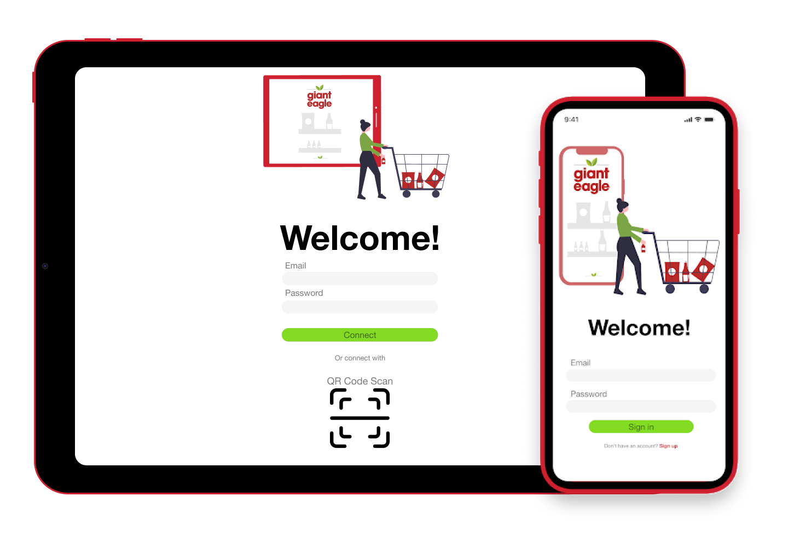
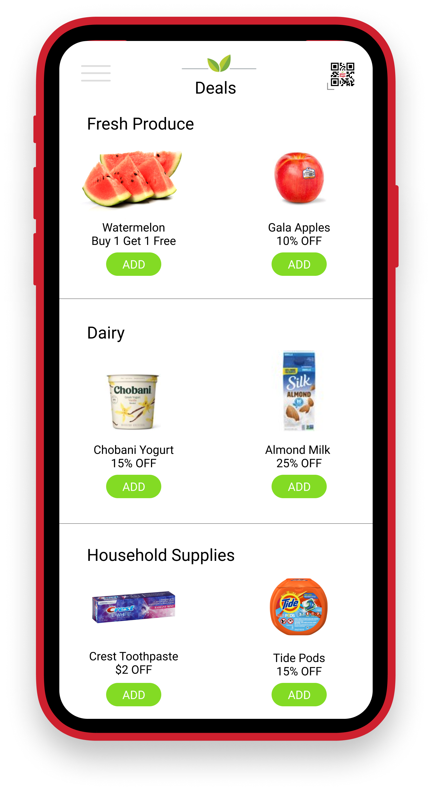
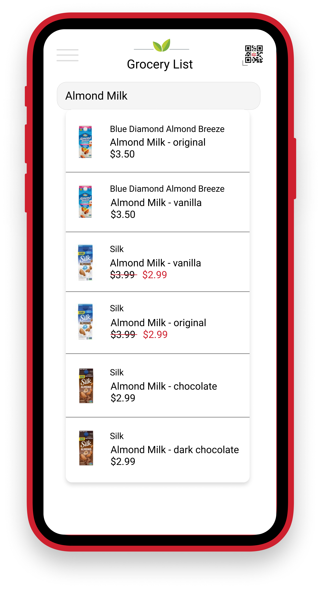
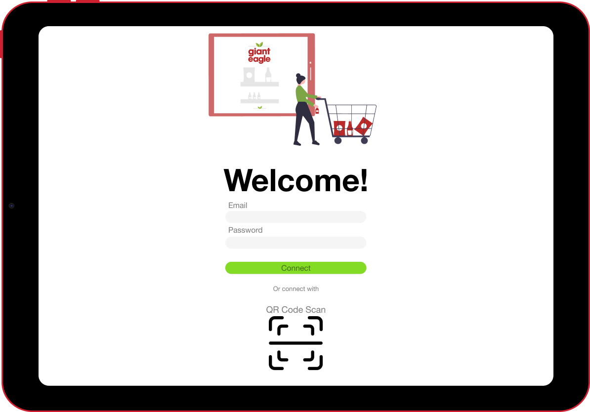
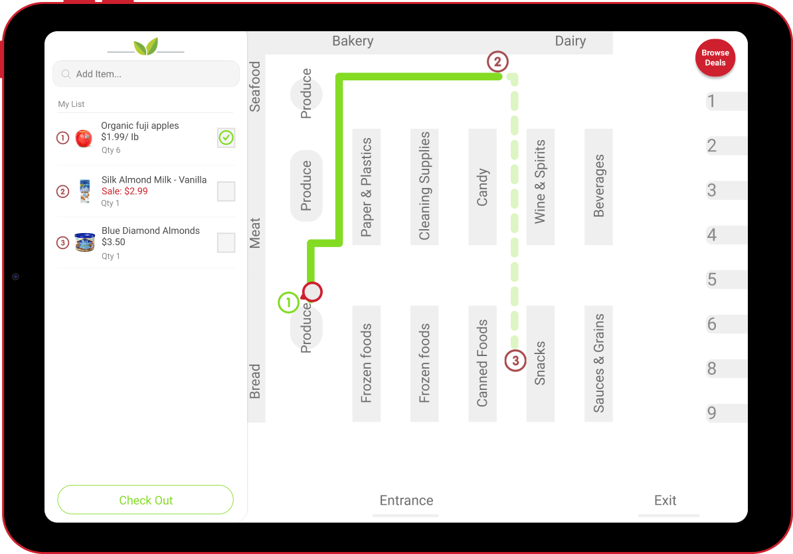

NavEagel

A Navigation App for an Efficient In-Store Experience.
How can we transform the grocery shopping experience in
the midst of a global pandemic?
Our team set out to create an application that would ease the
stress and anxiety related to grocery shopping with the ongoing
coronavirus pandemic. Grocery delivery services have become more
and more commonplace and we wanted to design a way for stores to
retain in-store shopping customers.
We designed an in-store navigation application that would allow customers to create their
grocery lists and receive an optomized route for the quickest shopping route. This solution
was designed in response to our user research in regards to shopping in a pandemic. We found
that shoppers have become increasingly aware of crowds and the primary focus when grocery
shopping is getting in and out of the store as quickly as possible. There is an alert system
embedded in the application that alerts users when upcoming aisles will be croweded. Users are then
given the option to either continue their route or come back to the aisle.


CLIENT BENEFITS
1. Creating an incentive for shoppers to choose your store
2. A platform to digitalize your deals and decrerase worker time
3. Transform the in-person shopping experience
USER BENEFITS
1. A safe, easy, and efficient way to shop
2. Alleviates stress and anxiety while shopping in a pandemic
3. The ability to plan and understand the layout of store prior to entering


In addition to the mobile appilcation, our team designed a corresponding tablet application.
The tablet would ideally be attached to the carts in-store. The design responds to a user need
identified in the early parts of our research. Some shoppers were against touching their mobile
phones inside the store and this allows for them to shop hands free without the need to have their
phones in their hands at all times. The tablet design allows for better visual details and room
to showcase a constant overview of the route.